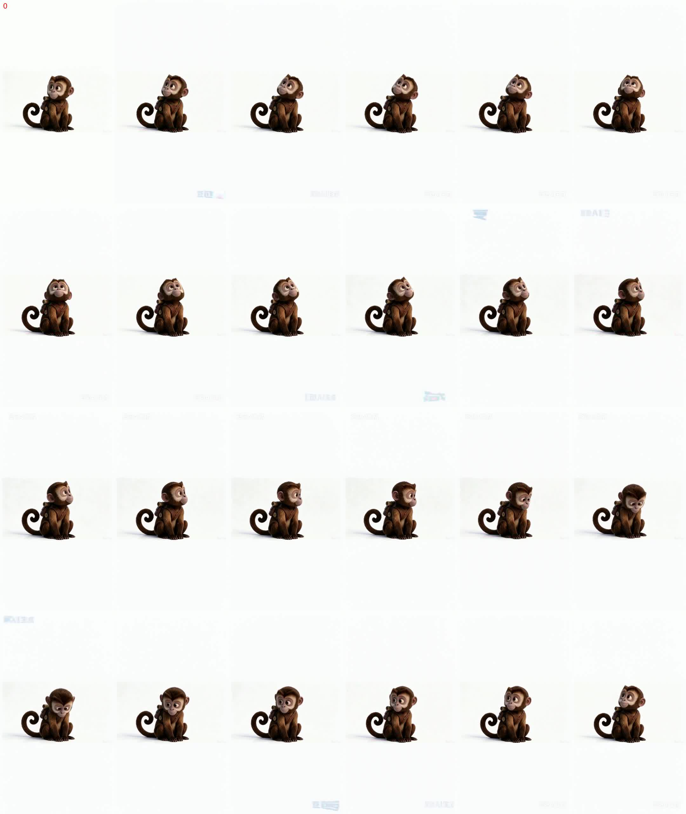
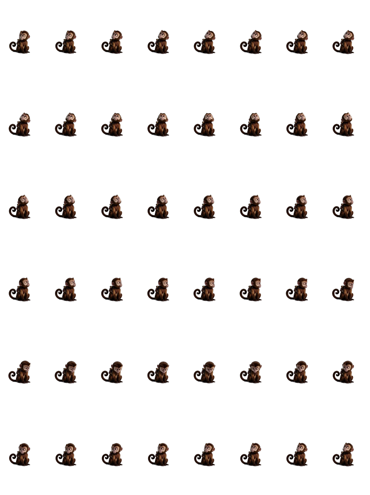
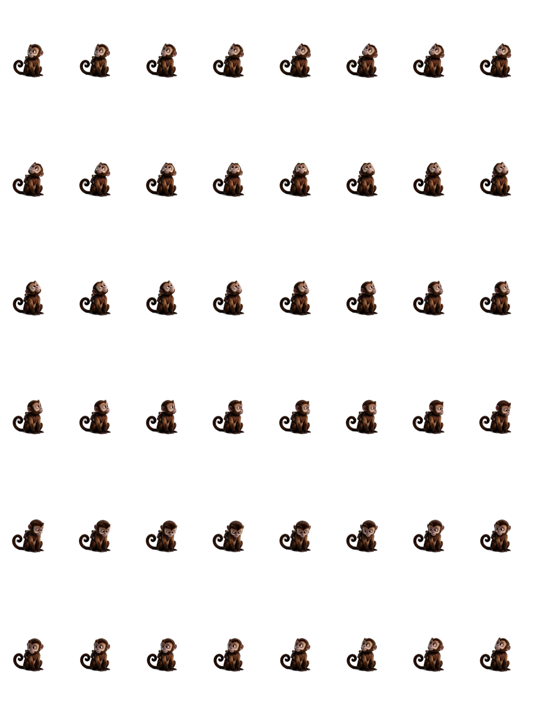
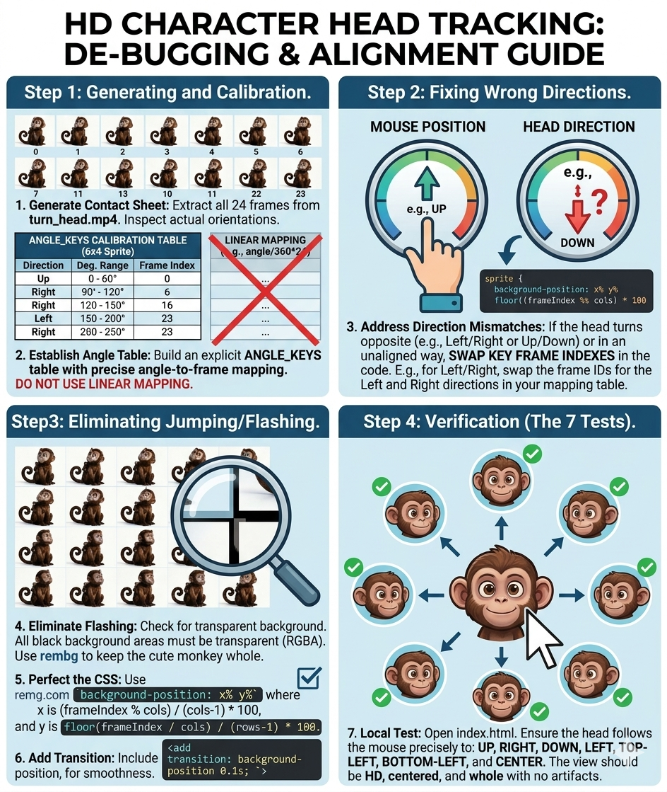

這是 aogl.cn 的一篇猴子精靈圖轉頭個人原創手記：把短轉頭視頻抽成雪碧圖（sprite sheet），用 contact sheet 做角度到幀號校準（禁止簡單用 angle/360*總幀數 線性映射），再在瀏覽器裡用鼠標位置驅動 background-position 切換幀，並配上桃子自定義光標。利於檢索的詞包括：精靈圖轉頭、CSS 雪碧圖、鼠標跟隨角色、綠幕摳圖 WebP。
流程概覽
抽幀，製作校準總表確認真實朝向，建立角度鍵位表，打包 10x12 共 120 幀 到 sprite_hd_120.webp，在本地瀏覽器驗證上、右、下、左、斜向與正中。

calibration_sheet.jpg：角度與幀號對照用總表。正面參考幀
中性「朝鏡頭」單幀導出為 frame_front.webp，用於縮略圖與打包前檢查。
frame_front.webp：正面姿態參考。在線演示：120 幀高清 + 桃子光標
移動鼠標：角色在 sprite_hd_120.webp 上切換 120 個背景位置（10 列 x 12 行）；桃子圖跟隨指針，pointer-events: none 避免擋住點擊。
original/monkey2/gemini-code-1778834915677.html（sprite_hd_120.webp、cursor.png）。雪碧圖資源
三份 WebP 記錄迭代：標準密度、高清版、最終 120 幀 生產用網格。


源片靜幀 turn_head_1-10
十張編號 PNG 在打包全網格前抽樣旋轉弧線，便於質檢與圖庫 alt 覆蓋。
源視頻（MP4）
兩版導出記錄早期與 refined 轉頭；摳綠前保留主體、避免誤摳白/灰區域。
turn_head_v1.mp4turn_head_v2.mp4生成式風格錨點
兩張 Gemini 圖與工程資產並列，用於分享預覽與圖像檢索，不替代校準後的精靈圖。


離線腳本
gemini-code-*.py 與 txt.txt 記錄抽幀與摳像規則。本文固定公開 HTML、圖片與視頻路徑，便於 SEO 與長期引用。